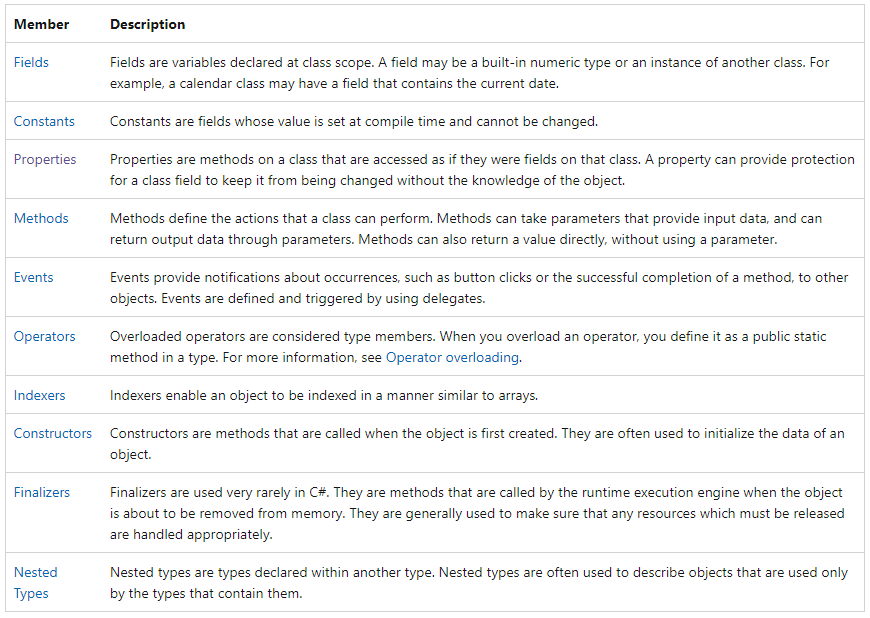
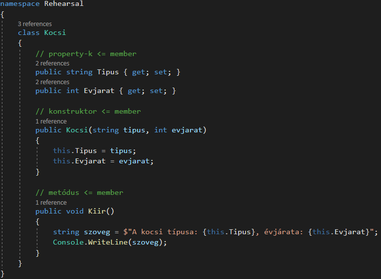
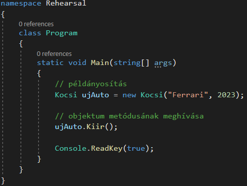

A témakör célja, hogy megadja azt a minimálisan szükséges alapot, amellyel egy C# program fejlesztéséhez neki lehet kezdeni. A témakörök a későbbiekben részletesen tárgyalják még az objektum-orientált szemléletet, itt csak azt az alapot sajátítják el a diákok, amely segítségével megérthetik a programszerkezet és a segédkönyvtárak alapvető működését, és fel tudják azt használni. Saját osztály megírása a későbbi anyagrész feladata lesz.
Programozás során utasításokat adunk a számítógépnek. Ha csak szimplán egymás alá írjuk az utasításokat, akkor spagetti-programozásról beszélünk. Ez rövidebb kódok esetén úgy ahogy működik, de több száz sor esetén már nem. Ekkor már struktúrálni kell valahogy a programkódot.
Nézzük meg a három legismertebb és legtöbbet használt formáját:
procedurális programozás (procedural programming): Lényege, hogy a megoldandó programozási feladatot kisebb egységekből, avagy eljárásokból (angolul: procedure) építi fel. Ezek az eljárások a programnyelv kódjában általában jól körülhatárolt egységek (függvény, rutin, szubrutin, metódus - az elnevezés az adott programozási nyelvtől függ), amelyeknek van elnevezésük és jellemezhetik őket paraméterek és a visszatérési értékük. A programok futtatása során gyakorlatilag a főprogramból ezek az eljárások kerülnek sorozatosan meghívásra. Meghíváskor meghatározott paraméterek átadására kerül sor, az eljárás pedig a benne meghatározott logika eredményeként általában valamilyen visszatérési értéket ad vissza, aminek függvényében a főprogram további eljáráshívásokat végezhet.
objektumorientált programozás (object-oriented programming): Az objektumok fogalmán alapuló programozási paradigma. Az objektumok egységbe foglalják az adatokat és a hozzájuk tartozó műveleteket. Az adatokat ismerik mezők, attribútumok, tulajdonságok néven, a műveleteket metódusokként szokták emlegetni. Az objektum által tartalmazott adatokon általában az objektum metódusai végeznek műveletet. A program egymással kommunikáló objektumok összességéből áll. A legtöbb objektumorientált nyelv osztály alapú, azaz az objektumok osztályok példányai, és típusuk az osztály.
funkcionális programozás (functional programming): A funkcionális programnyelvek a programozási feladatot egy függvény kiértékelésének tekintik. A két fő eleme az érték és a függvény, nevét is függvények kitüntetett szerepének köszönheti. Egy más megfogalmazás szerint, a funkcionális programozás során a programozó inkább azt specifikálja programban, mit kell kiszámítani, nem azt, hogy hogyan, milyen lépésekben. Függvények hívásából és kiértékelésből áll a program. Nincsenek állapotok, mellékhatások (nem számít, mikor, csak az melyik függvényt hívjuk).
Nézzük meg a következő magyar nyelvű és angol nyelvű videókat, ahol szemléletes példákon keresztül magyarázzák el a különbséget!
Mivel a C# objektumorientált programnyelv, ezért meg kell ismerkednünk a címben megadott fogalmakkal.
osztály (class): A minket körülvevő világban lévő dolgok bizonyos feltételeknek felelnek meg. Például a kocsiknak van típusuk, színűk, évjáratuk, végsebességük, tulajdonosuk (ideális esetben), el tudnak indulni, meg tudnak állni (ideális esetben) stb. Az objektumorientált programozás is felhasználja ezt a tényt, és létrehoz egy absztrakciót, amelyben leírja, hogy szerinte egy autónak milyen tulajdonságokkal kell rendelkeznie. Ezt az absztrakciót nevezzük osztálynak. Ehhez kapcsolódóan hallhatjuk még a prototípus (prototype) kifejezést is. A két fogalom sokban megegyezik, de az osztály mélyebb absztrakciót jelent.
objektum (object): Ha már létezik egy osztályunk, akkor lehetőségünk van konkrét dolgokat létrehoznunk belölük. Ezt nevezzük specifikálásnak, azaz meghatározott, a feltételeknek megfelelő értékeket adunk a tulajdonságoknak. Az így létrejött konkrét dolgokat nevezzük objektumoknak.
member (tag): Az objektumok mindig valamilyen állapotban (state) vannak. A kocsi esetén van valamilyen színe, típusa, sebessége, elindul-e, megy-e stb. Ezeket nevezzük azt adott objektum esetén member-nek (tagoknak). Ezek adott osztályból készített, de különböző objektumok esetén eltérőek is lehetnek.

property (jellemző): Ez egy C# specifikus dolog. Ennek a segítségével "rejtjük" el az objektumot leíró tulajdonságok némelyikét (pl. bankszámla jelszó), és állítjuk be azok értékét a konstruktoron kívül.
konstruktor: Ez egy speciális metódus az osztályon belül, melynek segítségével foglalhatjuk le a szükséges memóriaterületet az adott objektumnak, majd ennek a címét adjuk oda vissza programnak.
példányosítás (instantiation): A fentebb leírt specifikációs eljárást nevezzük példányosításnak.

